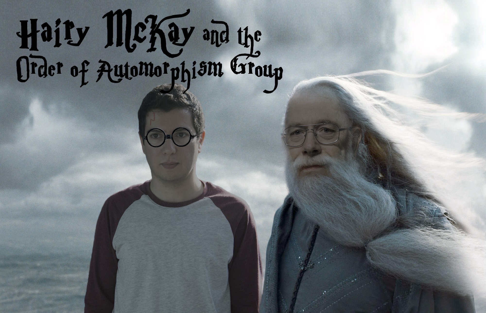

I am Reza Jooyandeh (Mohammadreza Jooyandeh when I was in the academic community). It is a Persian name natively written as رضا جوینده which means elation (Reza) & searcher (Jooyandeh) and roughly pronounced as [rezäː 'ʤuːjændeʰ] in International Phonetic Alphabet. My pronounces are he/him/his, but you can also call me gurrrl.
I have learnt that big organizations can become platform for personal growth, a way to practice and learn the skills that I would like to have. By days, I am leading the team of amazing engineers @ Microsoft that craft the developer experience of APIs and SDK of Azure Communication Services. Our platform is built on the services that power Microsoft Teams and Skype and empowers developers to build communication features into their apps and services. Prior to that, I spend a few years, building Microsoft Sticky Notes and bringing Fluid framework to OneNote.
At core, I am a huge nerd 👨💻 and in my natural habitat, I make dad jokes. I love teaching and through Science World, I go to different schools where I get to show the kids the magic 🔮 and joy 🥳 of Math and Computer Science.
By now, probably you've figure out that my background is in Math and Computer Science. I did two bachelor's degrees, one in each. Followed by a master's and a PhD in Computer Science where I spend most of it focusing on Computational Graph Theory. As a PhD student I was working on isomorphism testing of plane graphs and isomorph-free exhuastive generation of graphs under supervision of Brendan McKay. Below is a totally unaltered 🤐 picture of the two of us.
People who are close to me know that I write code for things that maybe I should not. I tend to write code where it works better than me like online dating 😋. I was invited by SCWIST, Society for Canadian Women in Science and Technology, to give a talk and I dedicated a part of my talk to how I hacked online dating to find 💖. Here is the full version:
The Erdős number describes the "collaborative distance" between mathematician Paul Erdős and another person, as measured by authorship of mathematical papers.
Looking at the graph below you can see why my Erdős number is 2: Reza Jooyandeh ► Brendan McKay ► Paul Erdős.
Having born in Iran, and lived in Asia, Oceania, Europe and North America, I consider myself a citizen of the world (so earthist 😁) earth. But I need to live in Africa, South America and Antarctica to truly be one, but I guess one 🦶 at a ⌛.
Aug 2015: 🥇🥇 Grand Prize, Microsoft //oneweek Hackathon 2015, OneNote for Learning, Microsoft Wide.
Aug 2016: 🥇 1st Prize in Mobile End Points Category, Microsoft //oneweek Hackathon 2016, Microsoft Wide.
May 2006: 🥈 Silver Medal, 30th Nationwide Mathematics Contest for University Students, Iran.
Jul 2005: 🏅 Honorable Mention, 12th International Mathematics Olympiad for University Students, Bulgaria.
May 2005: 🥈 Silver Medal, 29th Nationwide Mathematics Contest for University Students, Iran.
Oct 2010: 🥇🎮 1st prize in Microsoft - ANU ImagineCup Game Camp, Australia.
Dec 2004: 🏅 Honorable Mentioned, 29th ACM / International Collegiate Programming Contest, Asian Region.
Dec 2012: 🥇👨🏼🏫 Best Student Presentation Award, 36th Australasian Conference on Combinatorial Math & Combinatorial Computing, Australia.
Jun 2007: 🥇🎓 Top GPA amongst M.Sc. Students in All Majors of Amirkabir University of Technology, Iran.
Jul 2003: 7th team rank, Robocup Rescue Simulation League, Italy.
In 2014, I moved to Vancouver and started working at Microsoft where I had the pleasure to work with some amazing people on several awesome projects:
Back in 2005-2008 I was working in a startup, Sourena Software Group, which I was a co-founder of and I got to work on some amazing projects including a smart stock trader and a word processor for some Braille embossers to be used by the division for the National Organization for Blind of the Ministry of Education of Iran for printing books in Braille to be used in schools nationwide. Speaking of Braille, here is how my name looks like in Braille: